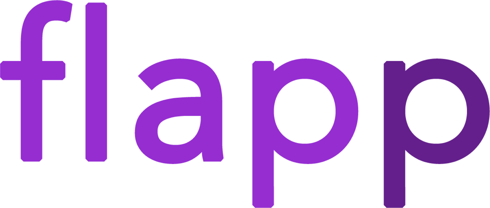

Hi. I'm Teja Polisetty
Engineer, Researcher, Entrepreneur
I enjoy my life. I have a great family, and wonderful friends. Nothing makes me happier than improving the day of somebody who is struggling. This passion drives me to be who I am and has led me to my major: biomedical engineering and applied mathematics. With this major, I will be able to satisfy my interest in problem solving while I research life-changing technology. I have great interest in computational biology, medical imaging, machine learning, and finance. Equipped with design and research experience, I work to conceptualize ideas, lead it through the cycle of design/development, and launch a product. Check out some of my work below.
Developed flapp, Hopkins Nanomedicine researcher, Co-Founder at MedHacks, Johns Hopkins University (Biomedical Eng, Applied Math)
Research and Projects.
Links and descriptions of some projects
 I joined Design Team 5 to develop flapp, an Android app solution and teaching tool that improves local tissue flap design for facial reconstructive surgery by providing stress/strain feedback and accurate flap designs in limited time during pre-/early intra-operation.
Constructs a 3D model of the patient for surgeon/resident to practice and plan design(s) either by free-hand drawing or through a drag and drop menu of template models. Based on the computed stress and strain from feedback from computation skin models and element analysis through ANSYS, the surgeon can make edits to improve predicted tensions or go forth with a design.
JHU Business Plan Competition Finalist, Funding with Dr. Nicholas Mahoney and Dr. Nicholas Durr from Center for Bioengineering and Design